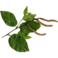

Correspondence Grimoire
Pain Relief
Type
Minerals3
Oils46

Sweet Birch Essential OilOther Correspondences1
Rituals10
Chestnut Bowl Room Pain Absorption SpellChestnut Pocket Arthritis Protection CharmWitch's Best Friend Vervain WardPrayer for Healing the BodyMurder Weapon Sharp Pain Removal SpellPotato Rheumatism Pocket CharmRaw Beef Pain Transference SpellLodestone Pain Withdrawal SpellCopper Garter Arthritis Healing SpellStone and Barley Pain Removal Spell